Power Control Home : www.sharetechnote.com
When we study a new technology.. one of way to efficiently learn/understand about it would be to assume that you are the designer/developer of the technology and ask yourself "Now I have this and this problem in such and such situation. How can I resolve the issue ?". If you keep asking the same questions to yourself, you would have some form of answer even though it may not be technically in detail and it may not be the solution that is really being used in the field. But don't be discouraged.. there is no absolute solutions for most of those problems.. probably your answer would be better than the one that is really being used.
|
Followings are the topics to be covered in this page. As you read through the page, you will notice that none of them is as simple as you might have thought. At first, read through 'Overview' section and get a big picture and then come back to details every time when you have specific issue while you are developing or testing. |
Now I will talk about the power control issues in LTE.
Before we go into the LTE specific power control, let's try with our own thought process for this power control issue. In wired communication, the amount of energy (power) being sent from the transmitter reachs the reciever without much degradation. Just think about connecting two PC with a long ethernet cable (e.g, around 10 m) and connecting a device to your PC with a simple RS 232 cables (usually less than 2 m). If you measure the voltage at the two ends of the cables while communicating, you will not see much voltage drops between the source and the destination. (Of course there is a certain amount of voltage drops. but the drop is not so big that it cannot be recognized by the reciever). However, what if the transmitter and reciever is connected wirelessly ?
You can intuitively know that the energy drop will be tremandous. Anybody who tried to measure something wirelessly (e.g, test a mobile phone with antenna, not with cable connection with Network simulator or spectrum analyzer) would have experienced these energy drop every time they do the test.
Then how do solve the problem ? This is the time that you assume you become a designer and have to come up with an idea to solve this issue.How do you handle this situation ?
The simplest way would be to use a very high gain amplifier on transmitter and blast huge powered signal to reciever.This method would be good when the reciever and the transmitter is in a reasonable distance. But what if the distance between reciever and transmitter is too close ? In this case, the strong signal from the transmitter may saturate the reciever.
Then how do you handle this situation ? You may try to tune down the transmitter amplifier power so that the receiver does not get saturated. If the distance between transmitter and reciever does not change and the channel condition (Humidity, precipitation, buildings) does not change, this kind of manual tuning would work. But can we do the same thing with mobile communication where the distance between reciever and transmitter changes very often and channel condition changes as well.
Now you have think up a solution to cope with this kind of varying distance and changing channel condition.
The way the people in this area came out is as follows :
i) Transmit send a signal to reciever
ii) Reciever measure the power of the signal from the transmitter
iii) if the measured power is too low, the reciever send a special command saying "increase the power". And if the measured power is too strong, it would send another command saying "decrease the power".
By this mechanism, the transmitter can change it's output power dynamically. This kind of power control mechanism is often called "Closed Loop Power Control" and the special command being used for power control is called TPC (Transmit Power Control) command. In short, Transmit send something and the reciever send a feedback to the transmitter and the reciever retunes itself by the feedback. This whole process forms a cyclic loop and this kind of control loop is called "Closed Loop" in control system theory.This kind of power control is used in almost all the mobile communication technology (e.g, CDMA, WCDMA, LTE and even in Bluetooth etc). This kind of power control process happens much more frequently than you may think. For example, in WCDMA case it would happen around 1500 times maximum within a second ideally. and in LTE case it can happen maximum 1000 times within a second.
If you are a person who is really interested in the power control mechanism and thought in very details about various communication environment, you may notice that there is a situation where we cannot use this kind of "command based power control" method. The 'command based power control'mechansm is based on a asumption that the transmitter and reciever has already established a call setup so thta they can exchange these command.
What if the transmitter and reciever is not in such a communication state ? For example, you just turned on your mobile phone and the mobile phone (transmitter in this case) has to send some signal to the base station (the reciever in this case).
How strong power the mobile phone has to transmit it's first signal ?This is very important.. if the mobile phone transmit the signal in too low power, the base station would not detect it.. and if it transmit it in too high power, it can interfere with the communication between other mobile phone and the base station. So it has to determine the proper transmit power level which would be strong enough to be properly decoded by the base station and weak enough not to interfere the communication between other mobile phone and the base station.
How do you handle this situation ? What kind of method the UE should use to determin the proper transmission power ?
It would not be easy to think out a solution intuitively...
Overall logic that is commonly used in mobile phone communication system is as follows :
i) Network (Base Station) is tranmitting a certain reference signal with a fixed power value
ii) Network transmit the information (e.g, Power) about the reference signal it is transmitting
iii) Network also transmit the maximum allowable power that UE can transmit.
iv) UE decode the reference signal comming from the base station and measured the power.
v) UE can figure out the path loss between the UE and base station by comparing the result of step iv) and ii).
vi) Also from the information at step ii), UE knows how much power is allowed for it.
vii) From the result at step v) and step vi), UE can figure out how much power it can really transmit.
This kind of process is also called a power control process. But since this power determination process is not based on a feedback loop as in Closed Loop Power Control, it is called "Open Loop Power Control".
Open Loop and Closed Loop Power Control
There are roughly two different way of power control mechanism. One is called Open Loop Power control and the other one is called Closed Loop Power Control.
Don't be confused by the term 'Loop'. When we say 'Open Loop', it does not mean 'Loop' control. It is just one directional control process, there is no feedback as illustrated below. (Actually 'a control path that does not have any feedback input' is the definition of Open Loop in control theory.. but it often cause a lot of confusion to many people).
In Open Loop Control, UE determines its Transmission Power by its own Power Setting Algorithm. This Power Setting Algorithm takes in many inputs, but all of these inputs are from UE internal setting or measurement data by the UE. There is no feedback input from eNB.
< Overall Flow for Open Loop Power Control >
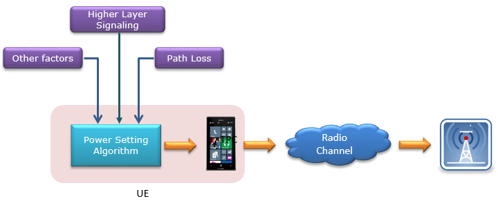
One of the most common example of Open Loop Power Control is the initial PRACH power. This PRACH power is determined as illustrated below.
< Overall Flow for Open Loop Power Control : PRACH>
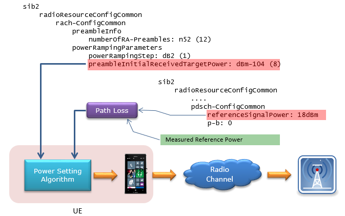
Once initial PRACH is detected, the UE power is controlled dynamically by TPC (Transmission Power Control) command (MAC CE or TPC field in DCI 0). It means UE Transmission Power is controled by some feedback input from eNB. In this way, overall power control process form a loop (closed loop). That's why it is called Closed Loop Control.
< Overall Flow for Closed Loop Power Control >
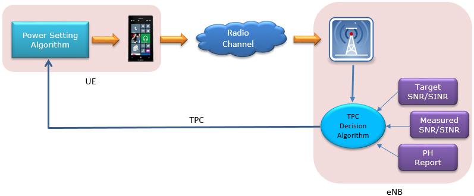
For details of LTE specific power control, you have to refer to
"TS 36.213 - 5. Power Control" and if you want to have some hands-on experience of these, I would recommand you to try some test items on 36.521.
For PRACH Power, refer to "TS 36.213 - 6.1 Physical non-synchronized random access procedure".
Power Control in LTE can be summerized by the following equations. The main purpose for this section is to understand the every details of these equations. This is the summary of the Power Setting Algorithm in the block diagram in previous section.

Since it is not easy to embed the mathematical symbols in this blog, I would express these symbols in text form as shown below.
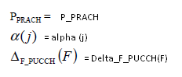
Let's have some overview of formula structure of the list I put above. 4 out of 5 formula has the following structure.
P_Channel(i) = min{P_CMAX, Formula}
P_Channel(i) means "Power of the Channel for each subframe", implying that these channel power is calculated and set for every subframe.
min{P_CMAX, Formula} means "Take the minimum value (smaller value) between P_CMAX, "Formula"".
It means..
i) if the formula give the value smaller than P_CMAX, the P_Channel(i) became the value given by the formula.
ii) if the formula give the value greater than P_CMAX, the P_Channel(i) became P_CMAX value.
Combining these two, it means that P_Channel(i) cannot be greater than P_CMAX.
But there is one power that does not take this format. it is PH(i) which has following format
PH(i) = P_CMAX - Formula.
In this case, what would be the maximum possible value that PH(i) can have ? It is also P_CMAX because the equation says "P_CMAX substracted by Formula". Assuming the "Formula" give you only positive value, the maximum possible value for PH(i) as well become P_CMAX.
Considering all of these, one thing I can know for sure is that in any case any of Uplink power for any specific channel cannot be greater than P_CMAX.
What is P_CMAX ? It is the maximum UE transmitter power specified in 3GPP 36.101. UE manufacturer has to make it sure that UE does not transmit any power greater than this power.
The P_CMAX in various case is derived from various formula and tables, so I would recommend to refer to "6.2.5 Configured transmitted Power" of 36.101. But practically you can take this value as a UE class power defined as in the
following table of 36.101.
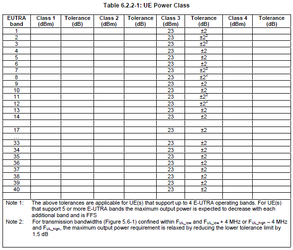
Refer to 36.213, 5.1 Uplink Power Control if you want to know in very detail.
Now let's look into P_PUSCH(i) first. I will write the equation in my text format for easy typewriting.
P_PUSCH(i) = min{P_CMAX, 10 log(M_PUSCH(i)) + P_O_PUSCH(j) + alpha(j) PL + Delta_TF(i) + f(i)
i : Subframe Number
j : This can be 0 or 1
M_PUSCH(i) : Number of Resource Blocks allocated for the UE
P_O_PUSCH(j) : P_O_NOMINAL_PUSCH(j) + P_O_UE_PUSCH(j),
where P_O_NOMINAL_PUSCH(j) and P_O_UE_PUSCH(j) for j = 0, 1 come from higher layer.
P_O_NOMINAL_PUSCH(j) come from p0-NominalPUSCH in SIB2
P_O_UE_PUSCH(j) come from p0-UE-PUSCH (e.g, SIB2,RRC Connection Setup,
RRC Connection Reconfig)
Following is an example you may see in SIB2 from live network or test equipment.
sib2
radioResourceConfigCommon
...
uplinkPowerControlCommon
p0-NominalPUSCH: -85dBm
alpha: al08 (5)
p0-NominalPUCCH: -117dBm
deltaFList-PUCCH
deltaF-PUCCH-Format1: deltaF0 (1)
deltaF-PUCCH-Format1b: deltaF3 (1)
deltaF-PUCCH-Format2: deltaF0 (1)
deltaF-PUCCH-Format2a: deltaF0 (1)
deltaF-PUCCH-Format2b: deltaF0 (1)
Following is an example you may see in RRC Connection Setup message from live network or test equipment.
rrcConnectionSetup-r8
radioResourceConfigDedicated
....
uplinkPowerControlDedicated
p0-UE-PUSCH: 0dB
deltaMCS-Enabled: en0 (0)
..1. .... accumulationEnabled: True
p0-UE-PUCCH: 0dB
pSRS-Offset: 0
filterCoefficient: fc4 (4)
alpha(j) : For j = 0, 1, alpah(j) can be any one of {0, 0.4, 0.5, 0.6, 0.7, 0.8, 0.9, 1}. The specified value come from higher layer (e.g, SIB2).
Following is an example you may see in SIB2 from live network or test equipment.
sib2
radioResourceConfigCommon
...
uplinkPowerControlCommon
p0-NominalPUSCH: -85dBm
alpha: al08 (5)
p0-NominalPUCCH: -117dBm
deltaFList-PUCCH
PL : Downlink Pathloss. This is calculated by referenceSignalPower – higher layer filtered RSRP
"Reference Signal Power" is defined by the following Information Element (SIB2, Refer to 36.331).
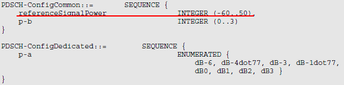
Following is an example you may see in SIB2 in real network or test equipment
sib2
radioResourceConfigCommon
....
pdsch-ConfigCommon
referenceSignalPower: 18dBm
p-b: 0
"higher layer filtered RSRP" is configured by the combination of following information elements(RRC Connection Setup and RRC Connection Reconfiguration, Refer to 36.331)
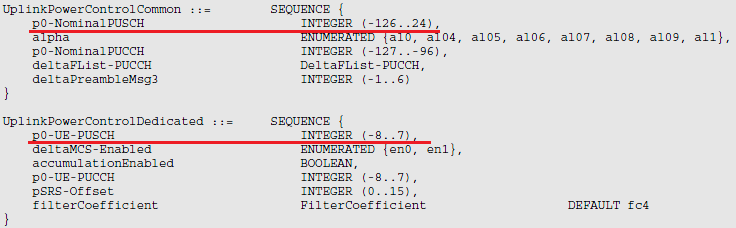
Delta_TF(i) = 10 log((2^(MPR * Ks) - 1) beta_PUSCH_offset) when Ks = 1.25
Delta_TF(i) = 0 when Ks = 0, where Ks comes from Higher Layer
f(i) = f(i −1) +delta_PUSCH (i − K_PUSCH ),
where delta_PUSCH is TPC command carried by DCI format 0 or DCI format 3/3a. Following table from 36.213 shows the mapping between TPC value and Power Up/Down.
Followng table defines how you should interpret the TPC value in DCI into the real power changes. As you see here, the same TPC value will converted to different physical power changes depending on whether the power control mode is 'Accumulated mode' or 'Absolute mode'.
< 36.213 - Table 5.1.1.1-2: Mapping of TPC Command Field in DCI format 0/0A/0B/3/4/4A/4B/6-0A/3B to absolute and accumulated δ_PUSCH,c values >

< 36.213 - Table 5.1.1.1-3: Mapping of TPC Command Field in DCI format 3A/3B to accumulated δ_PUSCH,c values >
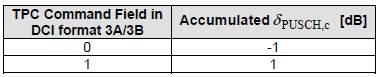
Many people think Power Control would be pretty simple and only in RF related issue. But as you saw in this process, it is pretty complicated process and you have to check a lot of parameters when you do some troubleshooting about the power related issues. You would do a lot of these troubleshooting when you do 56.121 RF conformance testing.
Now let's look into PUCCH. As above, I would rewrite the formula in my text format for easy type writing.
P_PUCCH(i) = min{P_CMAX, P_0_PUCCH + PL + h(n_CQI, n_HARQ) + Delta_F_PUCCH(F) + g(i)}
i : Subframe Number
j : This can be 0 or 1
P_O_PUCCH: P_O_NOMINAL_PUCCH + P_O_UE_PUCCH, where P_O_NOMINAL_PUCCH and P_O_UE_PUCCH came from higher layer(SIB2 or RRC Connection Setup or RRC Connection Reconfiguration).
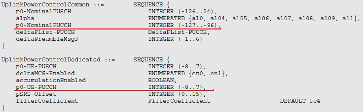
Delta_F_PUCCH(F) : Provided by Higher Layer(SIB2).
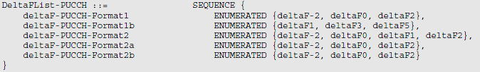
Each of PUCCH format is defined in Table 5.4.1 of 36.211
< 36.211-Table 5.4-1: Supported PUCCH formats >
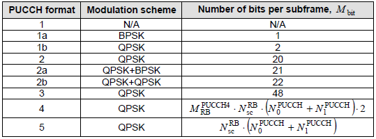
h(n_CQI, n_HARQ) : A specific number determined by PUCCH format, Number CQI bits, Number of HARQ value (Refer to 5.1.2.1 UE behaviour of 36.213)
g(i) : is defined by following equation.
g(i) = g(i-1) + delta_PUCCH(i-4), This shows that the current g(i) is determined by the previous subframe g() and g() of 4 subframe earlier.
delta_PUCCH is determined by the value carried by DCI format 1A/1B/1D/1/2A/2/3 and the following table of 36.213.
< 36.213 - Table 5.1.2.1-1: Mapping of TPC Command Field in DCI format 1A/1B/1D/1/2A/2B/2C/2D/2/3/6-1A to d_PUCCH values >
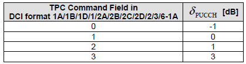
< 36.213 - Table 5.1.2.1-2: Mapping of TPC Command Field in DCI format 3A to d_PUCCH values >
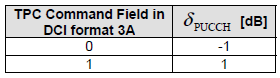
Now let's look into PH. As above, I would rewrite the formula in my text format for easy type writing.
PH(i) = P_CMAX - 10 log(M_PUSCH(i)) + P_O_PUSCH(j) + alpha(j) PL + Delta_TF(i) + f(i)
If you see the underlined part, you would notice this is the formula that is used for PUSCH power. So PH(i) means the power difference between P_CMAX and PUSCH power at that subframe. PH is send from UE MAC layer to eNB periodically as configured by Higher layer message. (Refer to Power Headroom page for the details of PH report(
This section moves to the section "How is the RACH Preamble Power determined ?" in RACH page.